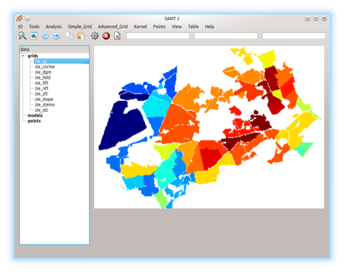
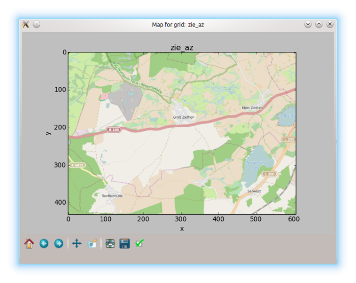
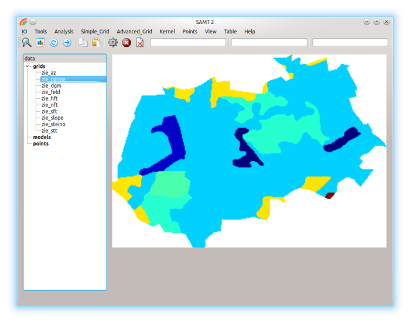
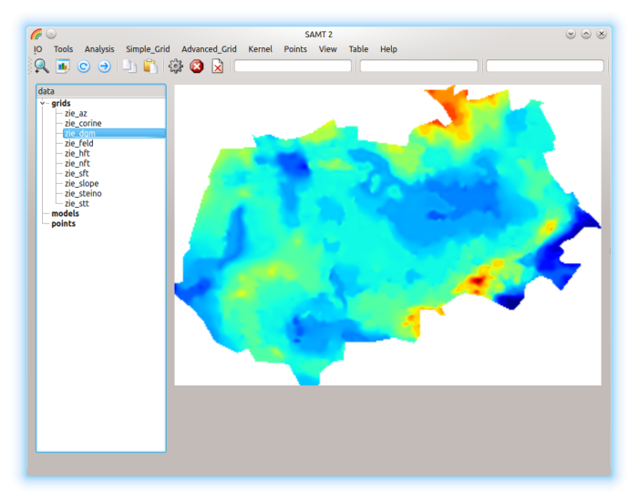

<!--DOCTYPE HTML PUBLIC "-//W3C//DTD HTML 4.01 Transitional//EN" "http://www.w3.org/TR/REC-html40/strict.dtd">
<html>
<head>
<meta http-equiv="content-type" content="text/html; charset=UTF-8" >
<title>vvv</title>
<link href="styles1.css" rel="stylesheet" type="text/css" >
</head>
<body-->
<h3><a name="anker0"><font color="darkblue">6.1. Example <em>Ziethen</em></font></a></h3>
<ol>

<li><em>IO: HDF Open: &nbsp;load <strong>ziethen.hdf</strong></li>
<li>Take <strong>zie_az</strong> 

<div align="center"><a href="zie_az.html">Menu <strong>View</strong> for grid zie_az</a></div> 
<p>&nbsp;</p>
</li>

<li>
<em>Analysis: Make_Map</em> &nbsp;shows an Open Street-map of the 
highlighted grid <strong>zie_az</strong>:

<p>&nbsp;</p>
</li>

<li><a name="anker1"></a><strong>zie_corine</strong> 

<div align="center"><a href="zie_corine.html">Menu <strong>View</strong> for zie_corine</a></div> 
<p>&nbsp;</p>
</li>

<li><a name="anker2"></a> <strong>zie_dgm</strong> 

<div align="center"><a href="zie_dgm.html">Menu <strong>View</strong> for zie_dgm</a></div>
<p>&nbsp;</p>
</li>

<li><a name="anker3"><font color='red'>Example</font></a>&nbsp;&nbsp;
<a href="zie_noise.html"><strong><em>Remove Noise With Kernel</em></strong></a>
</li>
</ol>
<br><a href="#anker0">Back to top</a> 

